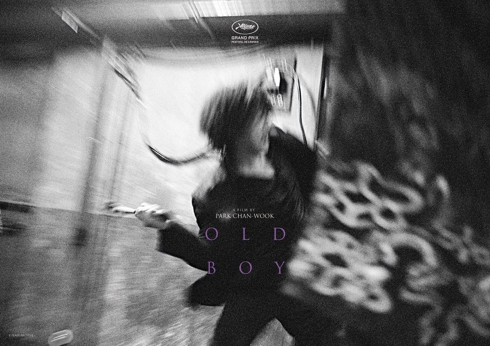

아내와 어린 딸과 함께 사는 오대수는 술이 취해 집에 돌아가는 길에 누군가에게 납치당한다.
8평의 좁은 방에서 감금당한 채 매일 군만두를 먹는 대수는 우연히 뉴스를 통해 아내가 살해당했고 아내의 살인범으로 자신이 지목되고 있음을 알게 된다.
15년 동안 탈출을 위해 온갖 방법을 다 쓰던 어느 날, 대수는 갑자기 자유를 얻게 되고, 납치범을 찾아 복수하기 위해 시내의 모든 중국집을 샅샅이 뒤진다.